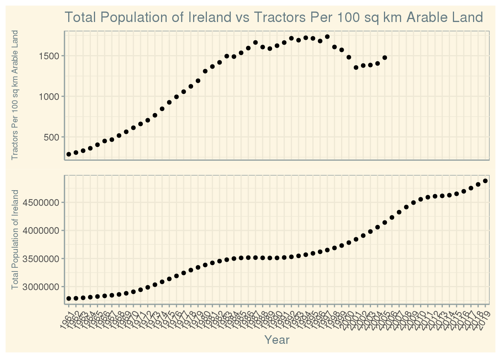
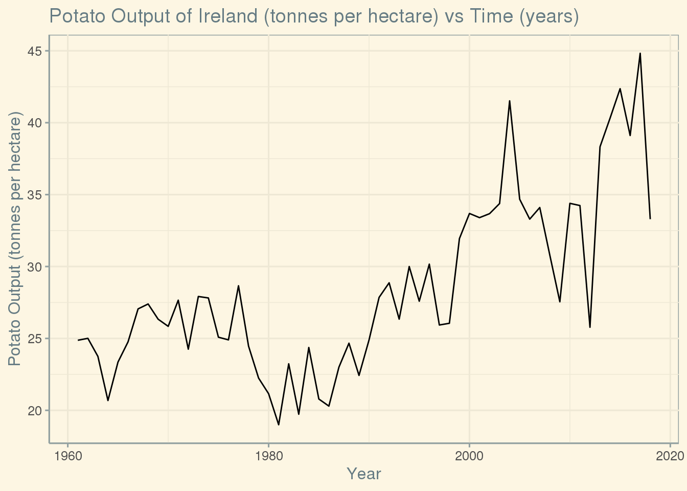
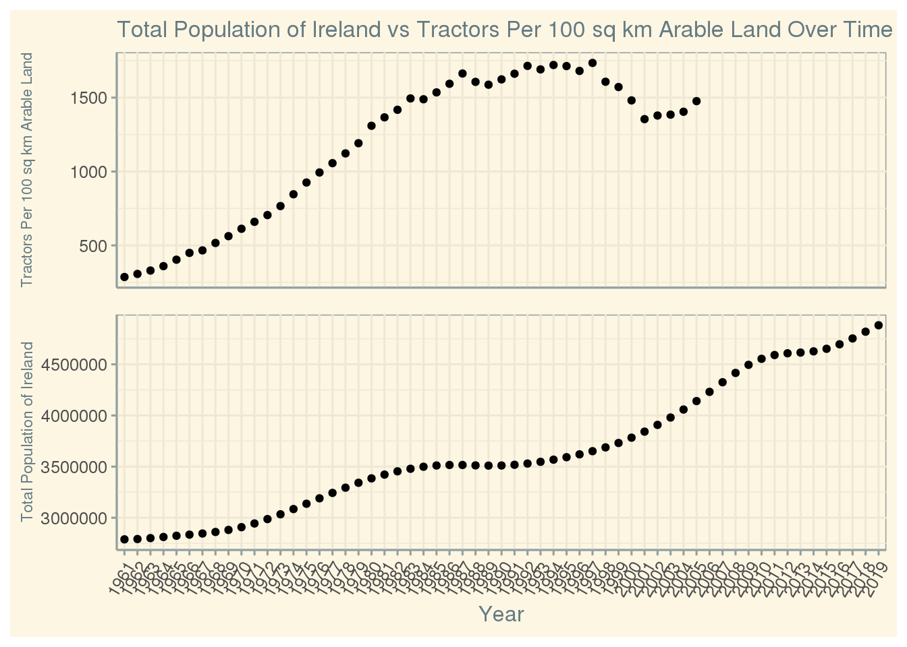

library(here)
library(ggplot2)
library(tidyverse)
library(readxl)
library(ggthemes)
knitr::opts_chunk$set(echo = FALSE, tidy = TRUE)
key_crop_yields <- read_csv(here::here("data", "tidytuesday","data","2020","2020-09-01",
"key_crop_yields.csv"))
fertilizer <- read_csv(here::here("data", "tidytuesday","data","2020","2020-09-01",
"cereal_crop_yield_vs_fertilizer_application.csv"))
tractors <- read_csv(here::here("data", "tidytuesday","data","2020","2020-09-01",
"cereal_yields_vs_tractor_inputs_in_agriculture.csv"))
land_use <- read_csv(here::here("data", "tidytuesday","data","2020","2020-09-01",
"land_use_vs_yield_change_in_cereal_production.csv"))
arable_land <- read_csv(here::here("data", "tidytuesday","data","2020","2020-09-01",
"arable_land_pin.csv"))## Warning: Removed 14 rows containing missing values (geom_point).
Possible that more tractors mattered more for food production from 1961 til around 1990 since number of tractors starts decreasing while pop increases which is different than previous trend. Possibly GMO crops and irrigation made less tractors necessary for more food.
 Single crop dependence, potato famine 1845-1849 * Question 3: How efficient has Ireland become with producing crops on arable land since 1961? To test this I will need to use the arable_land dataset and use the Arable land needed to produce a fixed quantity of crops ((1.0 = 1961)). I will have to filter for the years between 1961 and 2005 since those are the years where data is recorded for this variable. Then I will need to make a line graph of the variable previously noted over those years and look for any trends.
